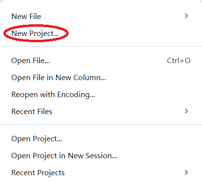
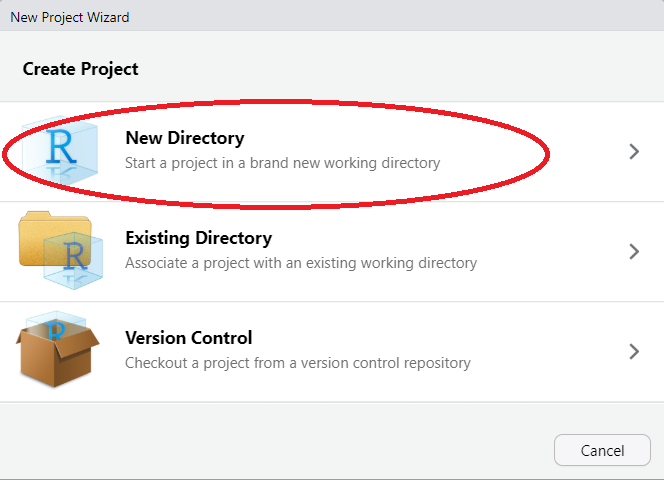
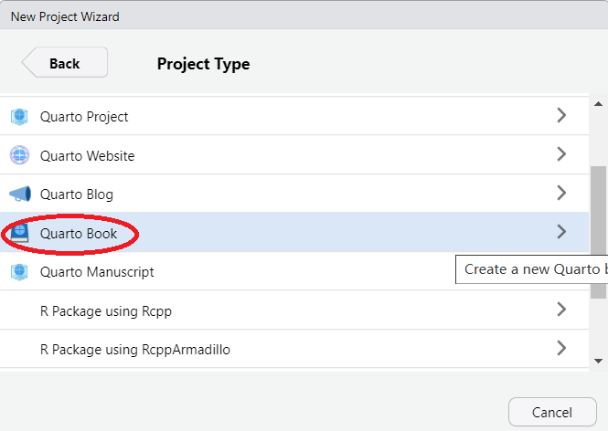
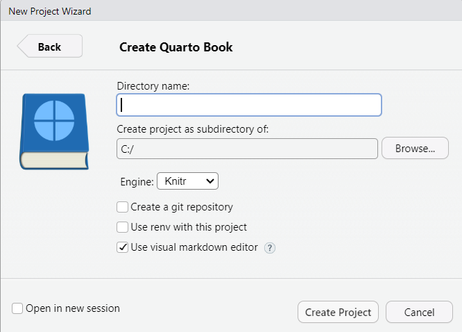

installed.packages("quarto")2 Create a Quarto Book
2.1 Set Up
2.1.1 Install Quarto
Download and install: click here to install Quarto onto your operating system. There are versions for Mac OS, Windows, and different distributions of Linux.
You may use Quarto with RStudio, Jupyter, VS Code, Positron, Neovim, or Text Editor. We focus on implementation in RStudio in these notes. Similar instructions for Jupyter are forthcoming.
If you are using RStudio, you must check if Quarto is recognized in RStudio: Open RStudio and run:
quarto::quarto_path()If it returns a file path, it means RStudio can detect Quarto. An optional step is to install the Quarto R helper package. This allows you to render (i.e., compile) the document using point-and-click functions in RStudio’s GUI as well as other integration features.
- Verify installation of Quarto in the command line of your computer:
quarto --version2.2 Create a Website Using RStudio
The below steps show how to create a website using Quarto.
2.2.1 Create a New Book Project
These instructions are to create a new
Open RStudio.
Go to File > New Project > New Directory.


Choose the project type. In these instructions, we create a Quarto book (see this book for an example). Even though it is called a “book,” it can be published as a website. Even as a website, it maintains its chapter organization.
- Quarto Project. The most generic type that can be specialized later into the other types.
- Quarto Website. Select this to create a website that follows traditional formatting, such as a navigation bar and site-wide theme. For example, this may be appropriate for a personal website for academics.
- Quarto Book. The output of this can also be a website (or a PDF), but the structure follows chapters. Consistent with book formatting, there is the option to create table of contents, section number, etc.
- Quarto Manuscript. This type is designed for academic papers intended for submission to journals. There are some journal-specific contents.
- Quarto Blog. This is a specific type with posts corresponding to blog organization.

- Name your project and choose the location. For now, this name will be the title. You can adjust this later.

- Click create project. After creating the project, you will see the following files:
_quarto.yml: Configuration file.index.qmd: Homepage (preface)..quarto folder: This hidden folder contains internal or cached files. If you are going to turn your project into a Git repository, add.quartoto the.gitignore.- Example project files:
cover.png: Cover that will show up on the homepage.intro.qmdandsummary.qmd: Example chapters.references.bibandreferences.qmd: An example of how to format references.
The next step is to edit the configuration file.
2.2.2 Edit the Configuration File (_quarto.yml)
The configuration file dictates information about the project, including the title, author, date, but also the order the chapters, bibliography information, and visual themes. Open _quarto.yml in RStudio or another text editor. Importantly, as you update the content of the chapters (e.g., summary.qmd below), you must manually add the chapters here. Follow the same indent structure, as YAML is sensitive to whitespace.
project:
type: book
book:
title: "Your Title Here"
author: "Author Names"
date: "Date"
chapters:
- index.qmd
- intro.qmd
- summary.qmd
- references.qmd
bibliography: references.bib
format:
html:
theme:
- cosmo
- brand
pdf:
documentclass: scrreprt
editor: visualSee Quarto Project Basics to learn how the files interact with each other. This chapter explains each element of the configuration file in more detail.
2.2.3 Homepage (index.qmd)
Write your preface in index.qmd. This is the first page that will appear once you publish the book. The body of the document can contain whatever content you wish. Just make sure the following line is the first line:
# Preface {.unnumbered}If you want to include a cover, save a new cover.png with your preferred image. This will appear on the homepage. Add the options cover-image and cover-image-alt to _quarto.yml under book, following the indentation rules.
book:
cover-image: cover.png
cover-image-alt: "alternative text for cover"2.2.4 References
Use your preferred method to generate a BibTeX bibliography called reference.bib. If you rename the file, change it in _quarto.yml. This chapter includes more information on editing references.qmd.
2.2.5 Render the Book
While adding content to the chapters (.qmd files), you can preview the book by rendering it. There are two main ways to render the book.
The first option is to use the command line of your computer. Navigate to the book’s directory and run:
quarto renderIf you want to render to a PDF, run:
quarto render --to pdfThe second option is to use the console in RStudio:
quarto::quarto_render()2.3 Convert Markdown to Quarto
The above instructions allow you to create a new book. What if you already have materials in R Markdown format? The instructions for converting those materials to a Quarto website are in Chapter 3.
2.4 Publish the Quarto Book to a Website
To publish the book, click here to see more
2.4.1 Resources
These notes follow the Quarto guide closely. Another useful resource is Quarto for scientists.